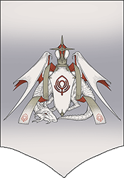
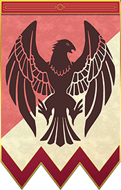
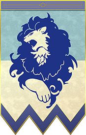
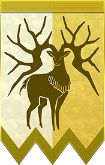

Choose your character!
Use your mouse to hover/click to discover more about each character.
Use your mouse to hover/click to discover more about each character.
"Here is something to believe in!"
Byleth is the player avatar and main protagonist of Fire Emblem: Three Houses. Byleth is a stoic, emotionally distant mercenary who works with their father, Jeralt. After saving the nobles Edelgard, Dimitri, and Claude from an ambush, Byleth is forced to join the Garreg Mach Monastery Officer's Academy as a teacher alongside Jeralt. In battle, they fight with a sword.
"When humanity stands strong and people reach out for each other...there's no need for gods"
Edelgard is the imperial princess of the Adrestian Empire–a mighty nation with a rich history–and its next emperor. Due to her status, she is the leader of the Black Eagle house at the Officer's Academy. She has an extremely noble and dignified air to her, and is able to calmly assess and act upon the situation and the people around her. In battle, she fights with an axe.
"Someone must put a stop to this cycle of the strong trampling the weak."
Dimitri is the next king of the Holy Kingdom of Faerghus, the realm of noble knights, and the house leader of the Blue Lions at the Officer's Academy. He is sincere and embodies chivalry, but at times, a faint shadow can be felt behind his cheeriness. In battle, he fights with a lance.
"We have the strength to scale the walls between us, to reach out our hands in friendship so we can open our true hearts to one another. That is how we win!"
Claude is the heir of the renowned Riegan family, which heads the Leicester Alliance, a new power formed by the nobility. He's the leader of the Golden Deer house at the Officer's Academy. He's social and has an easy-going attitude, but he also harbours a cunning and mischevious side, calling himself “someone unable to trust”. In battle, he fights with a bow.
